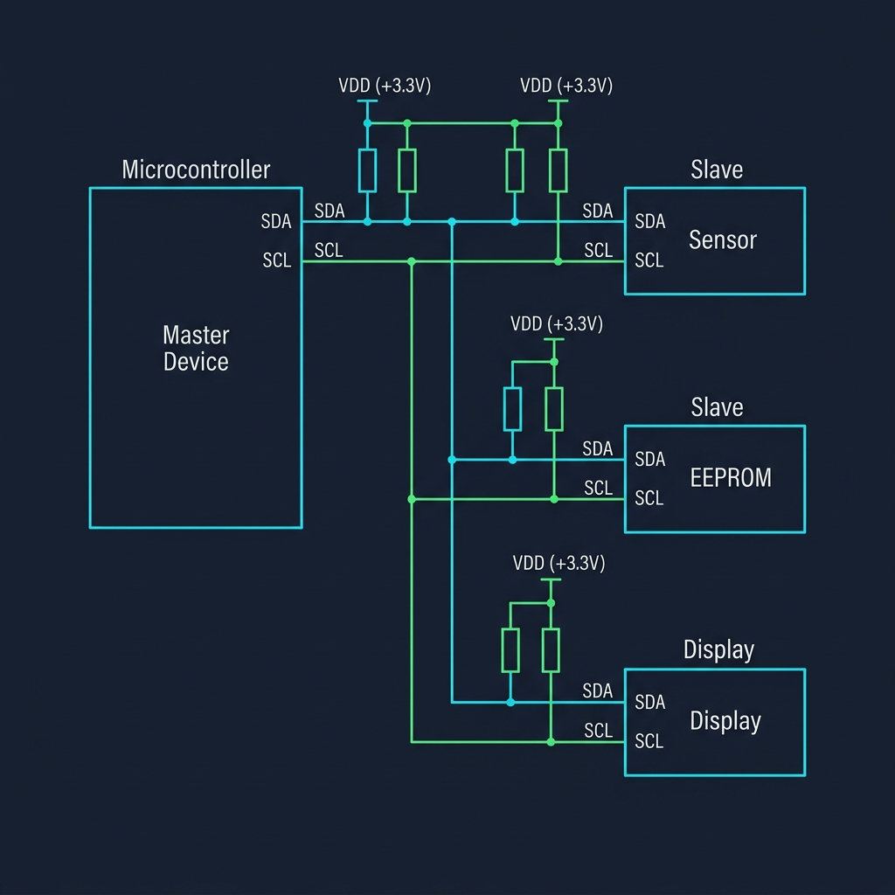
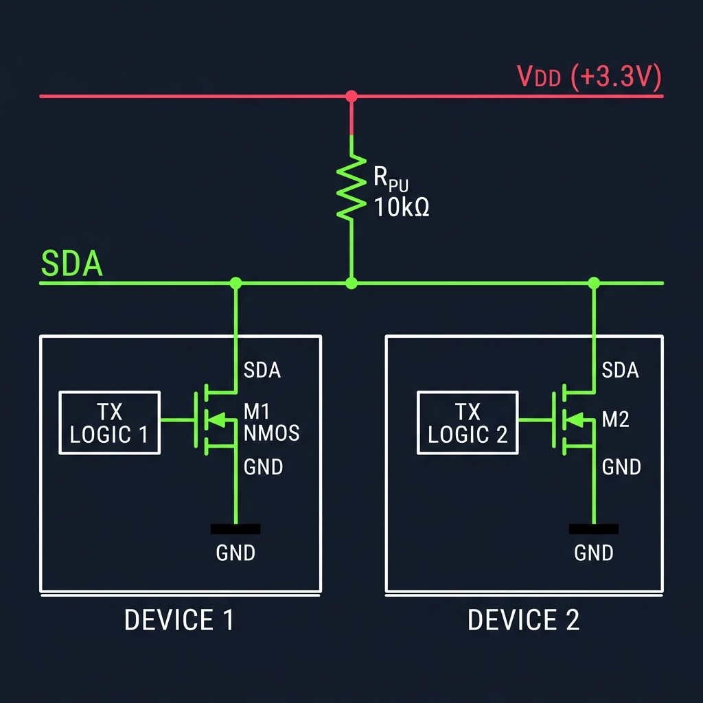
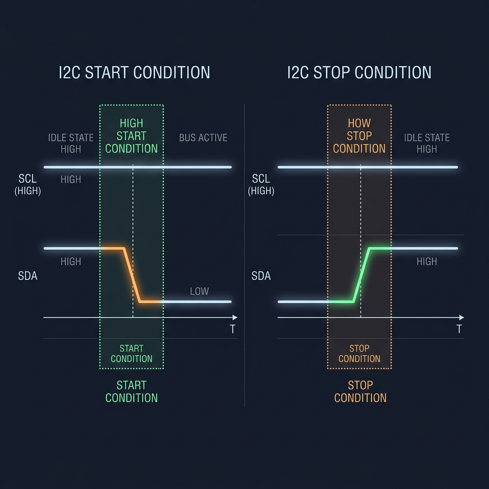
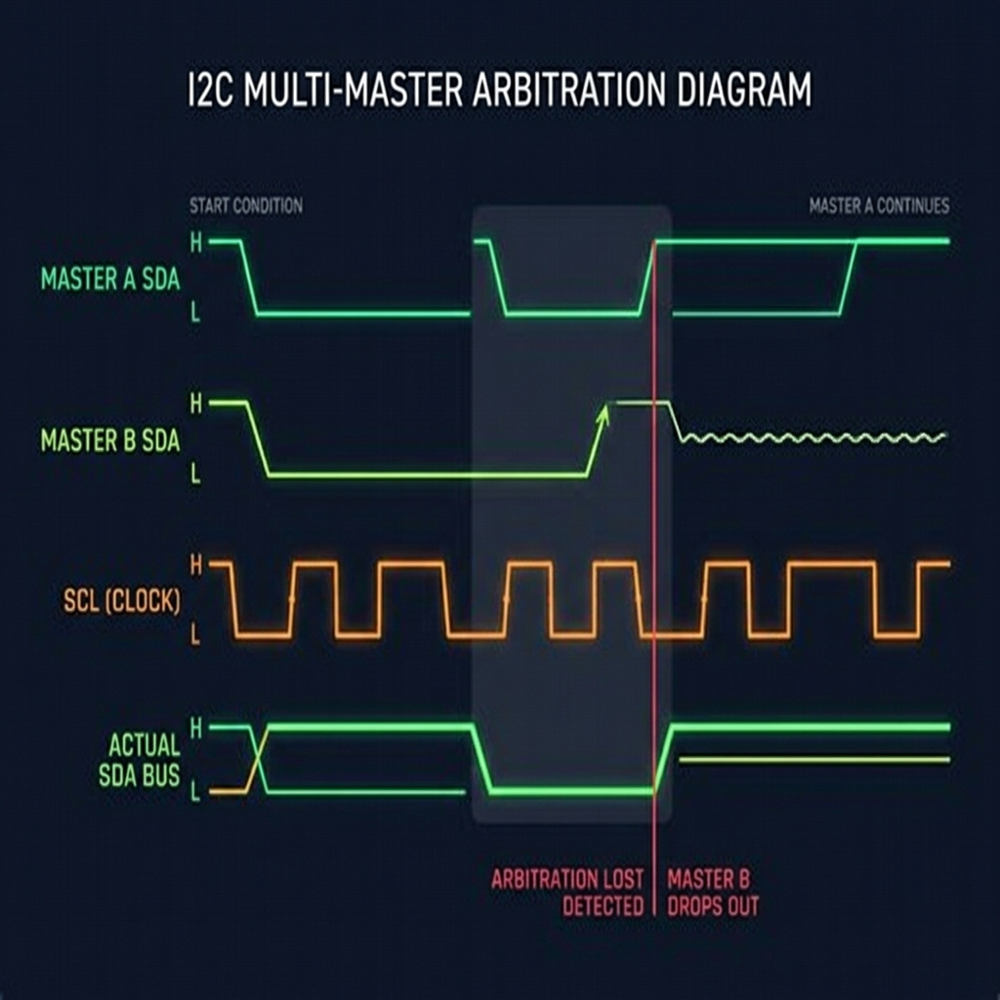

Interaction
I2C: The Shared Conversation
How open-drain logic and addressing solved the pin inflation crisis of SPI.
I2CSerial ProtocolsOpen DrainArbitrationEmbedded Systems
1. The SPI Pin Crisis
SPI unlocked extreme communication speeds by sharing a clock, but it introduced a severe hardware bottleneck: pin inflation. Because SPI has no addressing system, the master must use a dedicated Chip Select (CS) pin for every single peripheral on the bus. If you connect five sensors, you need five separate CS pins. If you scale to ten devices, your microcontroller's GPIO lines are consumed entirely by chip selection.
This physical routing nightmare forced engineers to re-evaluate the bus architecture. They needed a protocol that preserved the benefits of a synchronous clock but allowed dozens of devices to share the exact same physical wires without a forest of chip select lines. The solution was the Inter-Integrated Circuit (I2C) protocol.
2. Shared Wires: The Two-Line Compromise
I2C makes a radical design trade-off. It discards the four-wire, point-to-point architecture of SPI in favor of a strictly shared, two-wire bus: SDA (Serial Data) and SCL (Serial Clock). Every device on the bus connects to these same two traces.
By shrinking the bus to two wires, I2C eliminates the physical pin bottleneck. A master can communicate with over a hundred devices using the exact same two pins. However, this simplicity introduces a complex electrical challenge: if multiple devices share the same data and clock lines, how do we prevent them from colliding and burning out their output drivers when one tries to transmit a 1 while another transmits a 0?

I2C Shared Bus Topology showing Pull-up resistors and multiple slaves
3. The Physics of Open-Drain Buses
In standard push-pull output stages (used in UART and SPI), a device actively drives the line HIGH (connecting it to VCC) or actively drives it LOW (connecting it to GND). If Device A drives HIGH while Device B drives LOW on a shared wire, a low-resistance path is created directly from VCC to GND. This causes a short circuit, excessive current draw, heating, and physical damage to the silicon.
To prevent this, I2C uses open-drain (or open-collector) output buffers combined with physical pull-up resistors on both SCL and SDA. In an open-drain buffer, a device can only actively pull the line LOW (turning on an internal NMOS transistor connected to GND). It cannot actively drive the line HIGH; instead, to send a 1, it simply turns off the transistor and lets the line float. The external pull-up resistor then pulls the line HIGH.
This creates a 'wired-AND' logic bus. If any single device pulls the line LOW, the entire line goes LOW. The line only returns HIGH when every single device releases it. Electrical collisions are resolved safely: if two devices write conflicting states, the line simply resolves to LOW, drawing only a safe, limited current through the pull-up resistor.

I2C Open-Drain Transistor Circuit Schematic
4. The Syntax of a Shared Wire
Because I2C lacks physical Chip Select lines, the protocol must establish starting boundaries and address routing directly within the two-wire interface. Under normal operation, the SDA line is only allowed to change state when the SCL clock line is LOW. When SCL is HIGH, the data on SDA must remain stable to be sampled.
I2C exploits this stability rule to define START and STOP conditions. A START condition is signaled when SDA transitions from HIGH to LOW while SCL is HIGH. A STOP condition is signaled when SDA transitions from LOW to HIGH while SCL is HIGH. These transitions act as start-of-frame and end-of-frame markers that every peripheral monitors on the bus, resetting their internal receivers to listen for addressing.

I2C START and STOP Condition Waveforms
5. Software Addressing and Handshaking
Immediately following a START condition, the master transmits a 9-bit address frame. The first 7 bits represent the unique target address of the slave. The 8th bit indicates the transaction direction: Write (0) or Read (1).
The 9th clock cycle is reserved for a hardware handshake: the Acknowledge (ACK) bit. During the 9th clock tick, the master releases the SDA line (letting it float HIGH). The slave device matching the address must actively pull the SDA line LOW. If the slave pulls SDA LOW, it is an ACK—the transaction continues. If the slave is missing, busy, or has crashed, the line remains HIGH (a Not-Acknowledge, or NACK), signaling the master to stop.
6. Slowing the Master: Clock Stretching
SPI is a 'blind' protocol: the master drives SCLK regardless of whether the slave has processed the data. If the slave lags behind, data is lost. I2C solves this flow-control problem using clock stretching.
Although the master normally controls SCL, the open-drain architecture allows a slave to take control. If a slave needs more time to process a byte or fetch sensor readings, it can actively hold the SCL line LOW after the master releases it. The master monitors the SCL line: as long as it senses SCL is LOW, its internal clock generator pauses, freezing the transaction. Only when the slave releases SCL does it float HIGH and the master continues.
7. Polite Arguments: Multi-Master Arbitration
In complex systems, multiple master devices may share the same bus. If two masters assert a START condition simultaneously, I2C uses bus arbitration to resolve conflicts without corrupting data or causing electrical shorts.
Because of the open-drain wired-AND structure, both masters can drive SCL and SDA. As they transmit data bits, each master monitors the actual state of the SDA line. As long as the bus matches the bits they write, they proceed. However, if Master A writes a 1 (releasing SDA) but Master B writes a 0 (pulling SDA LOW), the bus resolves to LOW. Master A, sensing a LOW when it expected a HIGH, realizes another master is active, immediately halts its transmission, releases the bus, and falls back to receiver mode. Master B continues its transaction completely uninterrupted, unaware of the silent victory.

I2C Multi-Master Arbitration Timing Diagram
8. The Threshold of Complexity
Let's review the journey: UART taught us to align clock phases through a timing contract between two nodes. SPI showed us that sharing a physical clock yields speeds orders of magnitude higher at the cost of dedicated wiring. I2C showed us that by using addressing and open-drain physics, we can share the clock and data wires completely, scaling to dozens of devices using only two pins.
Yet I2C has limits. The pull-up resistors create an RC time constant with the parasitic capacitance of the wires: as the bus gets longer or more devices are added, the rising edge of SCL/SDA becomes slow and rounded, limiting speeds (typically 400 kHz to 3.4 MHz) and distances to a few meters. Furthermore, in high-noise environments like automotive engines or industrial floors, common-mode noise can easily flip single-ended logic levels.
When we need to scale to longer distances, high noise immunity, and multi-master robustness without master-slave dependencies, we must look beyond single-ended voltage sharing to differential, arbitrated networks—leading us to the design of the Controller Area Network (CAN).
The Cooperative Bus
I2C stands as a monument to cooperation in hardware. By shifting the selection burden from dedicated copper wires (SPI's CS) to software protocol syntax and open-drain physics, it enables complex inter-chip ecosystems using minimum resources.
It reminds us that communication is not just about driving voltages, but agreeing on when to listen and when to step aside.
On a shared wire, silence is as critical as speech. It is the pull-up resistor that lifts the bus when all devices learn to let go.
Current Exploration
I2C: The Shared Conversation